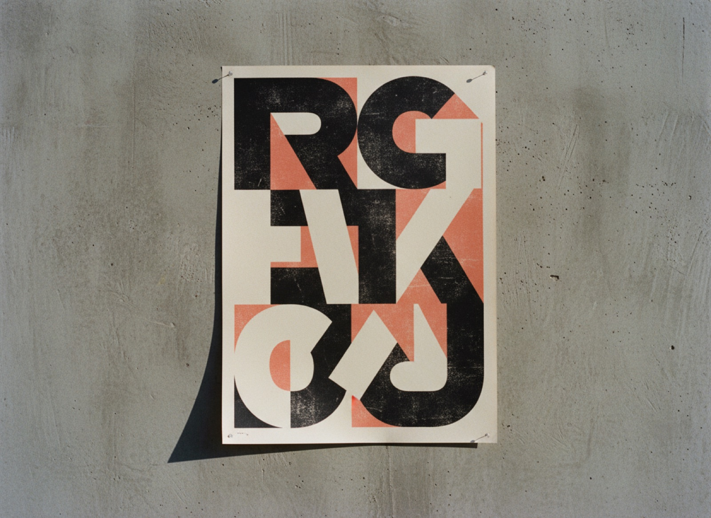
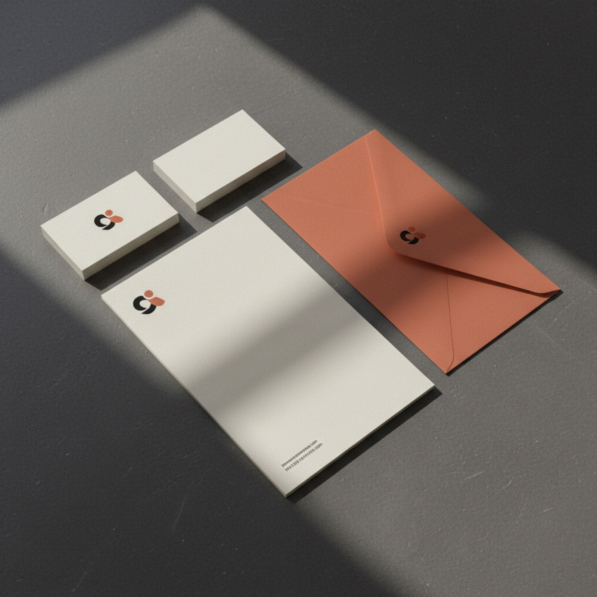
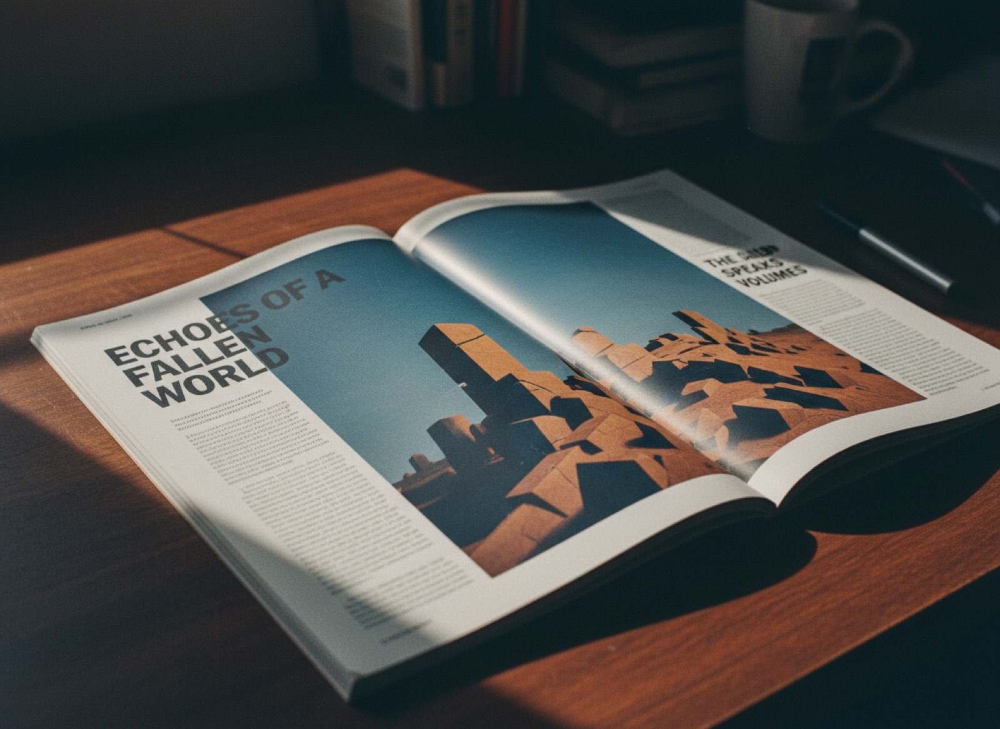
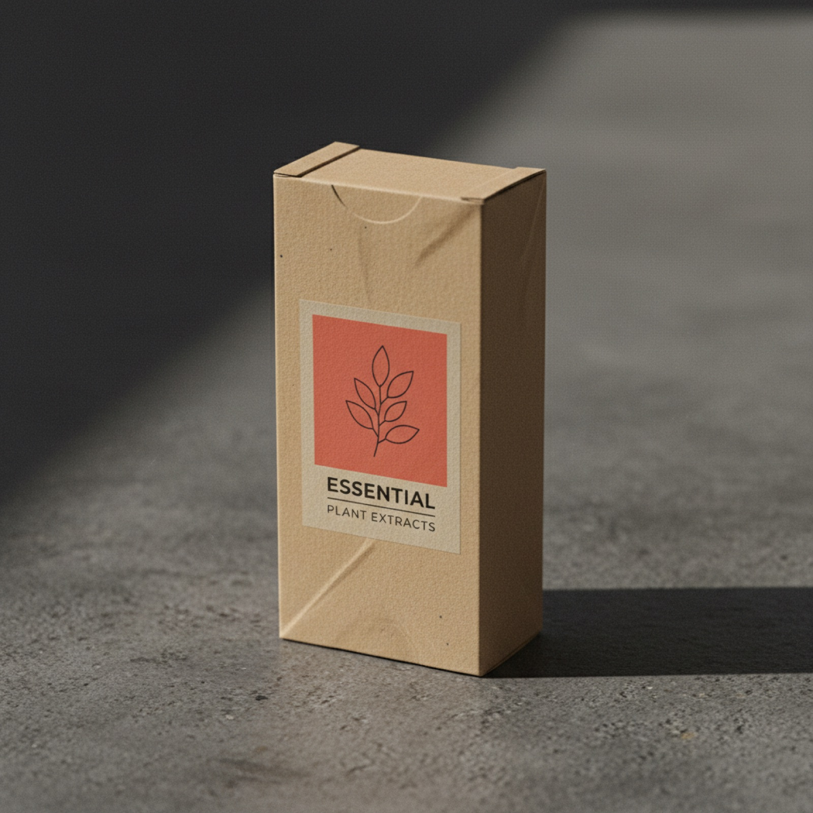
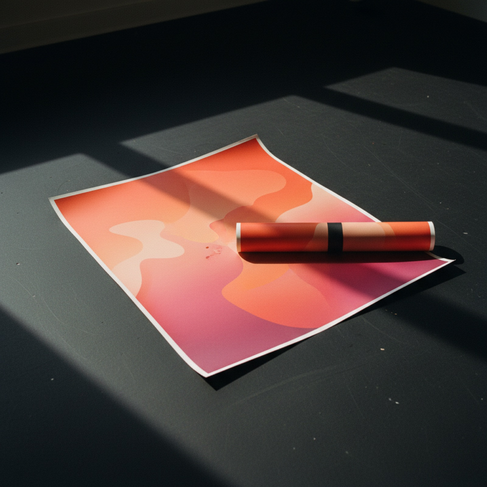

Maison Ardo
Una sartoria di famiglia che parlava ancora come vent'anni fa
Maison Ardo cuce su misura dal 1978, ma il marchio era rimasto fermo: un logo datato, nessun sistema, materiali diversi in ogni vetrina. La nuova generazione voleva aprirsi a un pubblico più giovane senza tradire la mano artigiana.
Il compito: costruire un'identità che tenesse insieme l'heritage e un tono contemporaneo, riconoscibile dal cartellino al sito, dalla vetrina al profilo social.

Il filo come segno
Siamo partiti da un gesto: il filo che entra e esce dalla stoffa. È diventato il segno del marchio, un monogramma che si cuce alle lettere e si ripete come trama sui materiali.
Una palette essenziale, un carattere con grazie misurate per i titoli e un corallo deciso per gli accenti. Poche regole, applicate con disciplina: etichette, sacchetti, biglietti e sito nascono dallo stesso alfabeto.
- Monogramma e marchio esteso
- Sistema tipografico e cromatico
- Cancelleria, packaging e linee guida
Dal segno alle cose



“Per la prima volta il negozio, il sito e le borse raccontano la stessa storia. Ci riconoscono prima ancora di entrare.”
Elena Ardo · titolare, Maison Ardo